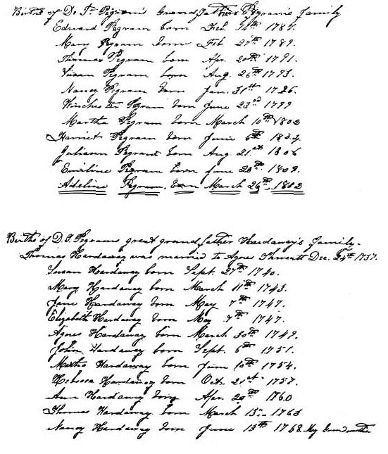

|
|
|||||||||
|
|
19 CAPTAIN DANIEL PEGRAM4 DANIEL PEGRAM4 (Edward3, Daniel2, George1) was born in Dinwiddie County, Virginia, 30 March 1767. Here we arrive at the last offspring of Edward Pegram3 and Mary Scott Baker, the ancestor of the specific line being followed in this treatise, and of immediate interest to the compiler. Daniel grew up as a member of the affluent, influential, large plantation owner families of Virginia, with their accompanying political and social prestige. It would appear that Daniel was too young to have served in the Revolution. The National Archives has no record of such service, nor has one been found elsewhere. Daniel was of that seemingly fortunate generation of people that faced manhood in a new, free and independent country, with great possibilities, and responsibilities before them. Daniel was too old to have experienced the most serious of the later problems of slavery, that destabilized the new nation, and decimated much of the affluence and power of the society to which he belonged. Daniel was married 4 August 1785, in Brunswick County, Virginia, to Nancy Hardaway (104), daughter of Thomas Hardaway Jr. and Agnes Thweatt, of Hardaway Mills on the Nottaway River. They both lived in Bath Parish, but were married by the Reverend Thomas Lundie, Rector of St. Andrews Parish ( 105). Nancy was born 1 5 June 1768 and died 13 November 1815. The Hardaway family has been traced by a number of people; and, members have been accepted into the National Society of Colonial Dames, and similar genealogical organizations, through the documented Hardaway lineage. John Stith, who had a land grant in Virginia in 1663, married Jane, widow of Joseph Parsons (150). They had a son Drury Stith, 1670-1741, who married Susannah Bathurst. Her father was Lancelot (Lionel) Bathurst, and her grandfather was Sir Edward Bathurst, who was knighted in 1643, (103, 144). Drury and Susannah had a daughter, Jane Stith, who married Thomas Hardaway. Their son Thomas Hardaway Jr. married Agnes Thweatt, 24 December 1737. She was born in 1720/21. They had a daughter, Nancy Hardaway, who was the eleventh and youngest child, born when her mother was about forty eight years of age. Nancy became the wife of Daniel Pegram. It is interesting that David Buckner Stith, second great-grandson of Drury Stith and Miss Bathurst, married a Miss Pegram of Dinwiddie County, Virginia (103, 150). Most all of the Dinwiddie County records were lost in the Courthouse fire of 1833, thus county records relative to Daniel Pegram are very scarce. In Dinwiddie County order Book, 1789, it is "Ordered that Daniel Pegram be recommended as Captain of Militia." Daniel did serve in this capacity, but it is not known for how long. In the same order book Daniel was listed as Surveyor of Roads. Daniel owned land in Dinwiddie County (42), but he moved to Bedford County, Virginia about the turn of the century, when he would have been about 33 years of age. He and Benjamin Andrews had 600 acres of land there (103). Daniel was Committeeman for the Republican ticket in Bedford County in 1800 (53). He was for a time a member of the General Assembly of Virginia, as were a number of the Pegram family. About the year 1800 seemed to be the main beginning of a westward and southern migration of many of the old families of Virginia to new lands. Tidewater Virginia, which was first settled, was populated relatively slowly during the early seventeenth century. Forested land had to be cleared for the 108 growing of food, and the entire area was inhabited by often hostile Indians, as evidenced by the Massacres of 1622 and 1644, executed by Opechancanough, Chief of the Appamatucks. The Powhatan Indians cultivated maise, or corn, melons, pumpkins, beans and several other plants. They supplied food to the colonists of Jamestown, and introduced tobacco to the English settlers. This was the beginning of the tobacco industry in Virginia. For a most interesting account of the settlement of early Virginia, particularly Dinwiddie County, one is referred to the book Dinwiddie County by Jones (40). The private ownership of land in Virginia began in 1616. Settlers were granted fifty acres for their passage to Virginia. This was known as a land patent. The Indians were gradually pushed westward and the colonists, with their slaves, cleared the land. It was planted mostly to tobacco, except for that which was required to produce food and clothing. Tobacco was much in demand in England, and it became a practical medium of exchange among the Virginia colonists. The land was cultivated recklessly. There was no such thing as proper rotation of crops, nor commercial fertilizer. Cultivation was mostly by hand tools. Under such circumstances the land soon "wore out". The settlers pushed westward, clearing and wearing out more land. There was plenty to be had. As the more hilly country was reached erosion added its toll to the land's destruction. Rather than push on westward into the mountainous regions of the state many people turned southward. Families moved into North Carolina, with their entire entourage of slaves, livestock, equipment and household goods. Since Tennessee was until 26 May 1790 known as the Western Territory, under the jurisdiction of North Carolina, and since land grants there were easy to obtain, many Virginians moved to that state, often skirting the mountains by a southward route. With this diversion we now return to Daniel Pegram4. On 18 June 1798 Benjamin Andrews and Daniel Pegram purchased 600 acres of land on Echolds' Creek in Bedford County, Virginia, from Drury Jones and his wife Mary, of Dinwiddie County, for the sum of 600 pounds. The deed carries a description of the specific location of the land. Mary Jones could not travel to the court in Dinwiddie to make acknowledgment of the conveyance of the land. It was therefore directed that any two or more of Gent. Justices, namely Edward Pegram, William Hardaway, Richard Pryor and John Pegram Jr. of Dinwiddie County, visit the said Mary Jones to determine if she, in the absence of her husband, voluntarily, without persuasions or threats, willingly agreed to the recording of the sale in the County Court. Mary Jones agreed to the sale of the land, and it was recorded in Dinwiddie Court on 21 June 1798. It was recorded in Bedford County 28 January 1799. (Deed Book 11, p. 12) A copy of the deed was obtained since it was recorded in Bedford County, and was not destroyed by the burning of the Dinwiddie Courthouse in 1833. This transaction appears to be of some importance, since Daniel Pegram moved to Bedford County about the time he and Benjamin Andrews purchased the land there. On 28 November 1808 Daniel Pegram purchased, for the sum of 360 pounds, Benjamin Andrew's share of the land, of 300 acres, which they had obtained from Drury and Mary Jones. The deed was signed by Benjamin Andrews and Jane Andrews, whose maiden name was Jane Wilkins. It will be recalled that her son, Wilkins Andrews, married Susan Manson Pegram, daughter of Baker Pegram4. The deed was witnessed by Edward Pegram, Thomas Pegram, Mary Pegram and Daniel Pegram. This was evidently Daniel and his three oldest children. Edward was 21 years of age, Mary 19 and Thomas 17. Daniel apparently remained on this farm as a planter until about 1813 when he followed the trend by moving to North Carolina. He and his wife Nancy and all of their children moved (with the exception of Edward and Thomas, his two oldest sons), along with their belongings, including some slaves (he had 20 in the 1810 census) and some livestock. This must have made a large and slow moving caravan. Evidently Daniel first settled in Mecklenburg County. Nancy Pegram, Daniel's wife, died 13 November 1815, only a short time after arrival in North Carolina. Daniel lived until 23 October 1832. They are both buried in the old Mason Graveyard, or Youngblood Cemetery, off Youngblood road, near the Buster Boyd Bridge over the Catawba River, in Mecklenburg County. Julia Ann Pegram is buried beside her parents. She died 2 July 1871. The cemetery is on a high knoll overlooking Lake Catawba. It is overgrown, having been out of use and neglected for perhaps almost a century. The Duke Power Company, which owns the land, constructed a stone wall around the area to a height of two or three feet, and also enclosed it with a woven wire fence. Many members of the Mason family are buried there. It is a beautiful setting and should be preserved. 109 The Yorkville Inquirer, York, South Carolina, of 26 May 1932 printed a story of this graveyard, and gave the inscriptions on many of the gravestones. I visited the graveyard in July 1982, and verified the burial site and tombstone inscriptions, of Daniel, Nancy and daughter Julia Ann. The Masons and Pegrams intermarried. Daniel's daughter Nancy married William Mason, and there were others. Daniel purchased land in Lincoln County, North Carolina, in that portion that was later Gaston County, from David and Judy Huson, on 30 September 18 16. His residence was listed as Mecklenburg County. (Lincoln Co. Deed Book 35, p. 180). The land was described as 180 acres on the west side of the Catawba River, for which Daniel paid $1400. He probably also made earlier land purchases in the area. There are a number of Lincoln County records concerning Daniel Pegram, of which a few are as follows: Daniel sold a slave to Joseph Kindrick on 9 February 1820, described as a negro man about 26 years of age, named Ephram, for a sum of $800 (Deed Book 32, p. 5 3). On the same page another sale of a slave to Mr. Kendrick is recorded under date of 15 January 1821. This was a 17 year old negro girl named Lucinda. A gift deed from Daniel Pegram to his son Winchester, for love and affection, dated 22 January 1821, conveyed one hundred and one acres of land on the Catawba River banks, (Book 29, p. 709). Daniel sold to his son Winchester a three year old negro boy, 2 January 1822, for $150 (Deed Book 30, p. 170). In April 1823 Daniel sold to Lemuel Moorman, his son-in-law, one hundred and seven acres of land on the banks of the Catawba River, adjoining Joseph Hart and Winchester Pegram, for the sum of $1,275 (Deed Book 30, p. 543). Daniel was left with a large family of children following his wife's death. His homestead was near the mouth of the south fork of the Catawba River, in the area known as the South Point section of present day Gaston County. The 1830 census of the York District of South Carolina lists Daniel. This was only two years prior to his death. York was near to the Pegram's lands in North Carolina, and several members of the family lived there. Daniel might have been there temporarily, or he might have lived there for a short time prior to his death. Daniel and Nancy had 11 children, all of them born in either Dinwiddie or Bedford County, Virginia. Many of these married into substantial North Carolina families, and have left a long line of rather successful and influential people. Their children were EDWARD5, MARY, THOMAS, SUSAN, NANCY, WINCHESTER, MARTHA, HARRIET, JULIA ANN, EMELINE and ADELINE. The following Bible records of Daniel Theodore Pegram, grandson of Daniel, lists names and birth dates of children of Daniel Pegram and Nancy Hardaway, also the family of Thomas Hardaway and Agnes Thweatt, parents of Nancy Hardaway. The records were originally from the bible of Daniel Pegram and Nancy, his wife. 110
 111 |
| Back | Next | Index | Table of Contents | References | |